Installation
# Install from CRAN
install.packages("hexify")
# Or install development version from GitHub
# install.packages("pak")
pak::pak("gcol33/hexify")Overview
hexify implements the ISEA (Icosahedral Snyder Equal Area) discrete global grid system. This vignette explains the mathematical foundations: the projection geometry, coordinate systems, aperture subdivision, and cell indexing.
The Problem: Equal-Area Grids on a Sphere
Any projection from a sphere to a plane must distort something. For spatial statistics, we need cells of equal area regardless of location. Standard latitude-longitude grids fail badly: a 1° cell at the equator covers ~12,300 km², while the same cell near the poles covers a tiny fraction of that.
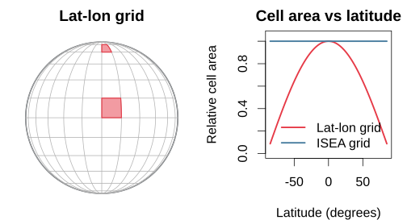
The ISEA projection solves this by:
Choosing a regular icosahedron with the same surface area as the sphere
Projecting each spherical “cap” onto its corresponding flat triangular face using a modified Lambert equal-area projection
Overlaying a hexagonal grid on the resulting planar triangles
The Lambert Azimuthal Equal-Area Projection
The foundation of Snyder’s projection is Lambert’s azimuthal equal-area projection, developed by Johann Heinrich Lambert in 1772. The projection maps a sphere of radius to a tangent plane while preserving area exactly (Snyder, 1987, p. 182).
Definition
The Lambert azimuthal equal-area projection is defined by a mathematical constraint, not a geometric construction. For a projection centered at point :
Azimuthal property: The direction (azimuth) from to any point on the sphere equals the direction from the origin to on the plane
Equal-area property: Any region on the sphere maps to a region of identical area on the plane
These two constraints uniquely determine the radial distance formula. For a point at angular distance from the center (measured along the sphere surface), the projected distance from the origin is:
This is not a perspective projection and has no simple geometric interpretation like “chord distance” or “ray intersection.” The formula is derived analytically from the equal-area constraint (Snyder, 1987, p. 182-185).
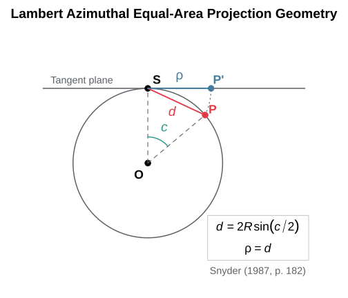
Forward Formulas
For the oblique aspect centered at , the full formulas are (Snyder, 1987, eq. 24-2 to 24-4, p. 185):
Equal-Area Proof
The projection preserves area because the radial and tangential scale factors satisfy at every point. At angular distance from center (Snyder, 1987, eq. 24-22, 24-23, p. 188):
Therefore , confirming the equal-area property.
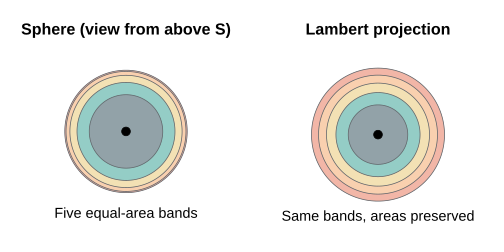
Each colored band has equal area on the sphere (the band boundaries are at ). After Lambert projection the outer bands stretch radially and compress tangentially, and every annulus still has the same area: grows linearly with .
Inverse Formulas
The inverse mapping recovers geographic coordinates from planar coordinates (Snyder, 1987, eq. 24-14 to 24-16, p. 187):
where is the angular distance from the projection center. Then:
If , the point is at the projection center: , .
Limitations
Antipode singularity: The point diametrically opposite the projection center (angular distance 180°) maps to infinity and must be excluded from the domain.
Shape distortion: While area is preserved exactly, shapes distort increasingly with distance from center. The maximum angular distortion at distance is (Snyder, 1987, eq. 24-24, p. 188):
At , distortion reaches . ISEA grids limit this by using icosahedral faces subtending only ~72° from face center.
No conformality: No projection can be both equal-area and conformal (angle-preserving)—a fundamental constraint from differential geometry (Snyder, 1987, p. 16-18).
The Icosahedron
Lambert’s projection works for a single tangent plane covering at most a hemisphere. To cover the entire globe with minimal distortion, Snyder used 20 planar faces—one for each face of a regular icosahedron with the same surface area as the sphere (Snyder, 1992, p. 10).
Geometry
A regular icosahedron has:
20 equilateral triangular faces (each covering ~1/20 of Earth’s surface)
12 vertices (where 5 faces meet—these become pentagon cells)
30 edges
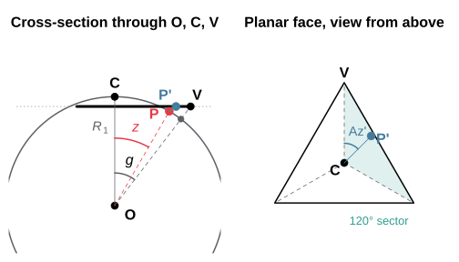
Left: the icosahedron has the same surface area as the sphere, so its face plane lies at the inradius from the centre O, inside the sphere, and the vertex V of the planar face lies on the ray through the sphere point at angular distance from the face centre C. In this cross-section the face extends from V on one side to the midpoint of the opposite edge on the other. A point P at angular distance from C maps to P’ on the face plane at radial distance from C. Right: on the planar face the azimuth Az’ is measured from the centre-to-vertex ray, and the three-fold symmetry of the face reduces every azimuth to one 120° sector.
Vertex Latitude Derivation
The 12 vertices are located at (Coxeter, 1973, p. 52-53):
| Location | Latitude | Longitudes |
|---|---|---|
| North pole | +90° | 0° |
| Upper ring | 0°, 72°, 144°, 216°, 288° | |
| Lower ring | 36°, 108°, 180°, 252°, 324° | |
| South pole | −90° | 0° |
The latitude arises from the golden ratio geometry. An icosahedron can be constructed from three mutually perpendicular golden rectangles (, where ). The non-polar vertices have -coordinate where , yielding .
Snyder’s ISEA Projection
Snyder extended the Lambert projection to the icosahedron by introducing an azimuth-adjustment transformation that ensures seamless transitions between adjacent faces while maintaining the equal-area property (Snyder, 1992, p. 12).
Bradley (1946) published an approximate equal-area graticule for the icosahedron, and an editorial footnote to that paper described an exact construction by Irving Fisher. Snyder rederived Fisher’s approach and generalized it to the five Platonic solids after White, Kimerling, and Overton (1992) chose a truncated-icosahedron grid for the U.S. EPA’s EMAP global sampling design (Snyder, 1992, p. 10). ISEA is the icosahedral member of this family.
Key Constants
| Constant | Symbol | Value | Source |
|---|---|---|---|
| Face center to vertex angle | 37.37736814° | Snyder (1992, Table 1, p. 12) | |
| Geometric angle | 36° | Snyder (1992, Table 1, p. 12) | |
| Scale factor | 0.9103832815 | Snyder (1992, eq. 5, p. 11) |
The vertex angle has the closed form (Snyder, 1992, p. 17). is the radius of the icosahedron whose surface area equals that of the unit sphere: equating gives .
Forward Projection Steps
The complete algorithm comprises seven steps (Snyder, 1992, p. 12-13):
Step 1: Compute angular distance and azimuth from face center to point :
Step 2: Reduce azimuth to [0°, 120°) by exploiting 3-fold symmetry.
Step 3: Compute auxiliary angle (Snyder, 1992, eq. 9, p. 13):
Step 4: Compute auxiliary angle (Snyder, 1992, eq. 6, p. 12):
Step 5: Compute adjusted azimuth (Snyder, 1992, eq. 7-8, p. 12):
Step 6: Compute radial distance (Snyder, 1992, eq. 10-12, p. 13):
Step 7: Convert to Cartesian with sector offset restored.
The Inverse Projection
Snyder (1992, p. 13) inverts the projection by iterating on the azimuth adjustment, and states that it has no closed form. Recht (2021) restates the projection with unit vectors and inverts it in closed form; hexify uses that inverse.
Write the point’s sector as the spherical triangle (face center, then the sector’s two vertices) and its plane image as the triangle with barycentric coordinates . With , , and the spherical area of the sector:
The point where the great circle from through the target meets the edge lies at arc from along that edge. The target lies on the arc from to , at the distance from the face center given by
where
is the arc from
to
.
hexify evaluates the arctangent as atan2(g, f) and
as
,
which keeps the inverse at full double precision near the face center
and near the sector edges. A forward projection followed by the inverse
returns to within a few times
radians.
Distortion
The projection is exactly equal-area, so its distortion falls on angles and local scale. On an icosahedron face the maximum angular deformation is , with linear scale factors between 0.860 and 1.163 (Snyder, 1992, Table 1, p. 12). The azimuth adjustment concentrates this deformation along the three radii from the face center to its vertices, where the graticule shows visible cusps (Snyder, 1992, p. 11).
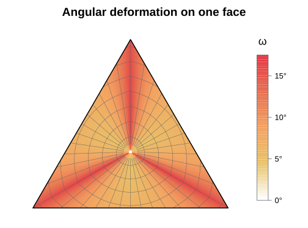
Deformation is smallest, about 5°, in the ring around the face center toward the edge midpoints, and largest along the three vertex radii, where the parallels kink as they cross. The 17.27° maximum is reached at the face center approached along a vertex radius. The Jacobian determinant of the projection equals 1 everywhere on the face, which is the equal-area property in differential form.
The Truncated Icosahedron
Snyder’s construction applied to the truncated icosahedron deforms angles by at most 3.75° on its 20 hexagons and 2.65° on its 12 pentagons (Snyder, 1992, Table 1, p. 12). Cutting each corner of the icosahedron at a third of the edge places every hexagon in an icosahedron face plane, centred on the face centre (the cut keeps the face’s three-fold symmetry), and every pentagon in a plane normal to a vertex axis, centred on the vertex (five-fold symmetry). A spherical icosahedron face is therefore the spherical hexagon plus a fifth of each of the three pentagons at its corners, and the solid’s face centres are the centres of the icosahedral grid’s faces and pentagon cells. The question is whether the hexagonal cells, indexed on the icosahedron’s plane triangle as now, could be projected through the truncated icosahedron’s faces instead. Three properties of that composite settle it.
Area shares. Snyder’s right triangles have areas 0.0376062647 on the hexagon and 0.0295072264 on the pentagon (unit sphere; Snyder, 1992, eqs. 2 and 24), so the spherical hexagon covers 0.71823 of a face and each pentagon fifth 0.09392. The plane hexagon cut at a third covers 2/3 of the plane triangle and each corner 1/9. An equal-area map cannot send the solid’s vertices to the third points of the plane edges with straight sides between them. A slice map (Snyder’s construction from a polygon centre) followed by an affine map of its plane triangle is again a slice map, so the only way to carry the construction into the plane triangle with straight pieces, three-fold symmetry and exact area is to slice the 18 spherical right triangles of a face onto 18 plane triangles of proportional area. Their corners are then fixed: the solid’s vertices at 0.32044 of the edge from each corner, and the midpoint of each hexagon-pentagon edge at 0.25384 of the edge along the bisector, so the hexagon-pentagon boundary bends at the bisector. The pentagons take the hexagons’ area scale here, where Snyder’s projection gives them a 1.28 percent larger one (Snyder, 1992, p. 11).
Seams. A slice map spaces the points of the edge
opposite its apex by area. On the right spherical triangle with legs
(apex to the foot
of its perpendicular to the edge) and
(from
along the edge), the area is
,
so a point at
goes to the share
of the half-edge
.
This share grows strictly with
at every interior
.
A hexagon-pentagon edge is perpendicular to the arc from the hexagon’s
centre to the pentagon’s, so both apexes have
as their foot, at different distances: the two sides send the same point
to two places. The offset reaches
of the half-edge, 21.7 m on the Earth, which is the offset Snyder
reports for his own projection (“less than 0.000018 of length BC”,
Snyder, 1992, p. 16). On Snyder’s icosahedron and on the vertex-oriented
equal-area projection (projection = "ivea"; van Leeuwen and
Strebe, 2006) every edge inside the map joins two mirror images, which
space it alike. A continuous equal-area composite would have to bend the
images of the slicing arcs, and no closed form for it is known.
A bound at the vertices. Five plane triangles meet at each vertex of the face frame, with 300° about it. Measure the frame in units in which its area equals the sphere’s. A circle of radius about the vertex then has length and encloses the area . Under an equal-area projection its preimage on the unit sphere is a closed curve enclosing the same area, so its length satisfies the spherical isoperimetric inequality . Where the projection has scale factors with , the inverse stretches lengths by at most . Hence some point of the circle has
Every equal-area projection onto the icosahedron’s faces has points with arbitrarily close to each vertex, whatever solid it passes through on the way. The truncated icosahedron’s 2.65° is measured on its own flat pentagon, which has 360° about its centre; in the icosahedron’s frame those 360° close to 300°.
Measured over a face (paper/bench/bench_trunc_icosa.R;
100,000 points on one face for the composite, 2,000,000 on the sphere
for the others, and a cap of 0.5° about a vertex):
| Face projection | Equal-area | Continuous | Mean | 95th percentile | Max | Max within 0.5° of a vertex |
|---|---|---|---|---|---|---|
| Truncated icosahedron in the face frame | yes | no (21.7 m) | 8.83° | 11.27° | 11.71° | 11.71° |
Snyder ("isea") |
yes | yes | 9.55° | 15.33° | 17.26° | 15.70° |
Vertex-oriented ("ivea") |
yes | yes | 8.11° | 10.52° | 11.12° | 11.12° |
Fuller ("fuller") |
no | yes | 7.04° | 11.33° | 13.13° | 13.14° |
The vertex-oriented projection is continuous, has a closed-form inverse, and has smaller mean and maximum deformation than the truncated-icosahedron composite. Its maximum, reached at the vertices, lies 0.68° above the bound, which caps what any equal-area projection onto the icosahedron’s faces could gain there. hexify therefore offers no truncated-icosahedron projection.
The Earth as an Ellipsoid
Snyder’s projection is equal-area on the sphere. By default hexify,
like DGGRID and H3, reads a geodetic latitude
as a latitude on the sphere whose area is the WGS84 ellipsoid’s. A small
region at
then has
times its spherical area on the ellipsoid, with
and
the meridional and prime-vertical radii of curvature and
the radius of that sphere. Measured geodesically on WGS84, the cells’
areas run from 0.9955 times the reported area at the equator to 1.0090
times it at the poles
(paper/bench/bench_ellipsoid_area.R).
The authalic latitude removes the factor. With the eccentricity,
the ellipsoid below
holds as much area as the sphere of radius
below
,
so
keeps every area, and cells equal-area on that sphere are equal-area on
the ellipsoid. hex_grid(ellipsoid = "WGS84") converts
geodetic latitude to
where a point enters the projection and back where it leaves, and sizes
the grid on
(6371.0072 km). hexify evaluates both directions by a sine series in
(or
)
whose coefficients it reads off the closed form above when the grid is
used; on WGS84 a latitude moves by up to 0.128°. The cells’ geodesic
areas then agree with the reported ones to the measurement’s own error,
about
.
The ISEA3H, ISEA7H, IVEA3H and IVEA7H definitions OGC registers are
built this way, with the first vertex at 11.20°E and authalic latitude
(orientation = "ogc"), which is geodetic latitude
58.397145907431° on WGS84:
ogc <- hex_grid(resolution = 8, aperture = 3, ellipsoid = "WGS84",
orientation = "ogc")
ogc
#> HexGridInfo Specification
#> -------------------------
#> Aperture: 3
#> Resolution: 8
#> Area: 7773.97 km^2
#> Diagonal: 94.74 km
#> CRS: EPSG:4326
#> Ellipsoid: WGS84, authalic radius 6371.0072 km
#> Orientation: vertex 0 at 11.200000, 58.282526; azimuth 0.000000
#> Total Cells: 65612The Unfolded Projection
Applying the per-face projection to all 20 faces and unfolding them
into a plane maps the whole sphere onto a strip of triangles (compare
Snyder, 1992, Figure 12, p. 18). hexify_lonlat_to_plane()
performs the composite transformation, in the same PLANE layout as
dggridR’s dgGEO_to_PLANE(). Coastlines and graticule
continue across every shared edge and are interrupted elsewhere:
draw_path <- function(lon, lat, col, lwd) {
p <- hexify_lonlat_to_plane(lon, lat)
jump <- c(FALSE, sqrt(diff(p$plane_x)^2 + diff(p$plane_y)^2) > 0.2)
p$plane_x[jump] <- NA
lines(p$plane_x, p$plane_y, col = col, lwd = lwd)
}
oldpar <- par(mar = c(0.5, 0.5, 2, 0.5), bg = "white")
plot(NULL, xlim = c(-0.1, 5.6), ylim = c(-0.05, 2.65), asp = 1,
axes = FALSE, xlab = "", ylab = "", main = "Unfolded ISEA Projection")
# face outlines: side-1 triangles around each projected face centroid
centers <- hexify_face_centers()
pc <- hexify_lonlat_to_plane(centers$lon * 180/pi, centers$lat * 180/pi)
s3 <- sqrt(3)
for (f in 1:20) {
base <- floor(pc$plane_y[f] / (s3/2)) * s3/2
up <- (pc$plane_y[f] - base) < s3/4
yy <- if (up) base + c(0, 0, s3/2) else base + c(s3/2, s3/2, 0)
polygon(pc$plane_x[f] + c(-0.5, 0.5, 0), yy, border = "gray60", lwd = 0.8)
}
# 15-degree graticule
for (lon in seq(-180, 165, by = 15))
draw_path(rep(lon, 181), seq(-90, 90, by = 1), "gray75", 0.6)
for (lat in seq(-75, 75, by = 15))
draw_path(seq(-180, 180, by = 0.5), rep(lat, 721), "gray75", 0.6)
# coastlines
xy <- st_coordinates(st_cast(st_geometry(hexify_world), "MULTIPOLYGON"))
for (ring in split(seq_len(nrow(xy)),
interaction(xy[, "L1"], xy[, "L2"], xy[, "L3"], drop = TRUE)))
draw_path(xy[ring, 1], xy[ring, 2], GREY, 0.8)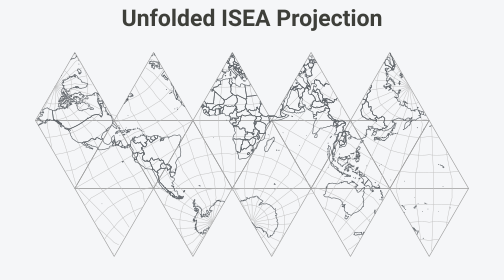
par(oldpar)Aperture and Resolution
Aperture defines how cells subdivide at each resolution level—it’s the ratio of parent cell area to child cell area (Sahr et al., 2003, p. 124).
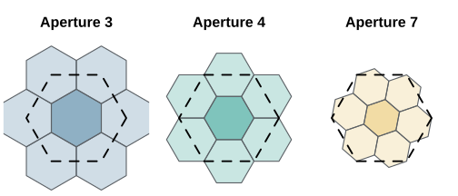
The dashed outline is the parent cell; the darker child shares its centre. For apertures 3 and 4 the parent boundary cuts through the ring children: each of the six vertex children of aperture 3 lies one third inside the parent, and each of the six edge children of aperture 4 lies half inside it, so the parent area equals or child areas. The seven aperture-7 children form a rosette with exactly the parent’s area, and its ragged boundary does not follow the parent’s edges.
Aperture Properties
| Aperture | Area Ratio | Linear Scale | Rotation per Level | Orientation |
|---|---|---|---|---|
| 3 | 1:3 | 30° | Alternates Class I/II | |
| 4 | 1:4 | 0° | Always Class I | |
| 7 | 1:7 | Class III |
The aperture 7 rotation angle follows from the child lattice: the parent’s nearest neighbour sits at two steps along one child lattice axis plus one step along the next, a vector of length child spacings at angle to the axis (DGGRID Manual, 2023).
How a Cell Divides Among Its Parents
Since successive resolutions do not nest, a cell can lie partly in two or three coarser cells (Carr et al., 1997). Within a face the cells of one resolution are the Voronoi cells of a hexagonal lattice and those one resolution coarser the Voronoi cells of a sublattice of index 3, 4 or 7, so the share of a cell in each coarser cell follows from the lattices alone.
After an aperture-3 step the children are centred on the parent centres and corners. The three parent edges meeting at a corner run through every second edge midpoint of the child centred there and cut it into thirds. After an aperture-4 step the children are centred on the parent centres and edge midpoints, and a parent edge runs through the centre and two opposite corners of the child on its midpoint, cutting it in half.
After an aperture-7 step every child centre lies inside a parent. Take the finer lattice as the Eisenstein integers , , with unit spacing, so a cell has circumradius and area . The coarser lattice is with : and , the turn in the table above, and the other twist is its mirror image . The centre child, of circumradius , lies inside its parent, of inradius . The parent edge facing the neighbour at runs between the parent corners and , through its midpoint , and two of these points belong to the child tiling:
The first is a corner of the ring child centred at ; the second is the midpoint of the edge this child shares with the child at , the second edge from . The child’s other corners lie inside the parent, so the part beyond it is the triangle of , the next corner and , whose sides and meet at :
The half-turn about maps both lattices onto themselves and swaps the parents at and , so the other half of the edge cuts off the child at the other way. Every ring child lies in its parent and in one neighbour, and the parent’s area checks: child areas.
The vertices of the solid are cell centres at every resolution, and
the turn by the angle deficit about a vertex maps both lattices onto
themselves, so the cells around a vertex are cut as in the plane and the
cell at a vertex lies wholly in the vertex cell above it. Snyder’s
projection is equal-area, so these shares hold on the sphere for every
cell, across face edges and at the vertices.
get_parent(overlapping = TRUE) returns the coarser cells a
cell reaches into, and hex_aggregate() divides each cell’s
value among them by these shares, one level at a time, each level by the
shares of its own aperture:
g7 <- hex_grid(resolution = 3, aperture = 7)
ids <- grid_global(g7)$cell_id
table(lengths(get_parent(ids, g7, overlapping = TRUE)))
#>
#> 1 2
#> 492 2940
# A uniform density adds up to each parent's area, the twelve pentagons included
up <- hex_aggregate(ids, cell_area(ids, g7), g7)
range(up$value / cell_area(up$cell_id, hex_grid(resolution = 2, aperture = 7)))
#> [1] 1 1Cell Count Growth
cat("Resolution Aperture 3 Aperture 4 Aperture 7\n")
#> Resolution Aperture 3 Aperture 4 Aperture 7
cat("--------- ---------- ---------- ----------\n")
#> --------- ---------- ---------- ----------
for (res in 0:8) {
cells_ap3 <- 10 * 3^res + 2
cells_ap4 <- 10 * 4^res + 2
cells_ap7 <- 10 * 7^res + 2
cat(sprintf(" %d %10s %10s %10s\n",
res,
format(cells_ap3, big.mark = ","),
format(cells_ap4, big.mark = ","),
format(cells_ap7, big.mark = ",")))
}
#> 0 12 12 12
#> 1 32 42 72
#> 2 92 162 492
#> 3 272 642 3,432
#> 4 812 2,562 24,012
#> 5 2,432 10,242 168,072
#> 6 7,292 40,962 1,176,492
#> 7 21,872 163,842 8,235,432
#> 8 65,612 655,362 57,648,012Orientation Classes
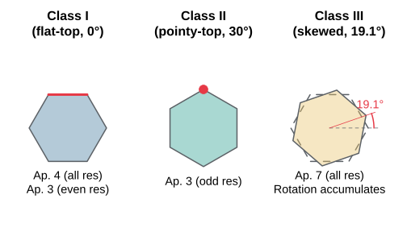
For aperture 3, orientation alternates between Class I (flat-top) and Class II (pointy-top) at each resolution. For aperture 7, each level adds a rotation of (Sahr, 2008, p. 176).
Pentagon Cells
Exactly 12 cells are pentagons at every resolution. This is a topological necessity derived from Euler’s formula (Coxeter, 1973, p. 10):
For a tiling with hexagons and pentagons on a sphere: - , ,
Substituting into Euler’s formula and simplifying yields , independent of .
Hexagons have six neighbors; pentagons have five.
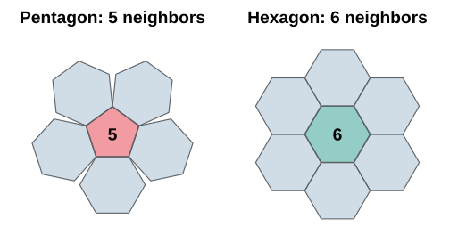
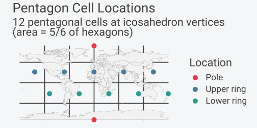
| Location | Latitude | Longitudes |
|---|---|---|
| Poles | ±90° | 0° |
| Upper ring | 0°, 72°, 144°, 216°, 288° | |
| Lower ring | 36°, 108°, 180°, 252°, 324° |
Pentagon area is exactly 5/6 of hexagonal cell area at the same resolution (Sahr et al., 2003, p. 125).
Coordinate Systems and Indexing
hexify uses a multi-stage coordinate pipeline (Sahr, 2008, p. 178):
| System | Components | Description |
|---|---|---|
| GEO | lon, lat | WGS84 degrees |
| Icosa Triangle | face (0-19), tx, ty | Snyder projection output |
| Quad XY | quad (0-11), qx, qy | Paired-triangle coordinates |
| Quad IJ | quad (0-11), i, j | Quantized grid indices |
| Index | string | Hierarchical cell address (Z3, Z7, or Z-order) |
| SEQNUM | integer | Global cell ID (1-based) |
Triangle to Quad
The 20 triangular faces are paired into 12 “quads” (diamond-shaped regions). Each quad contains two adjacent triangular faces sharing an edge. This pairing transforms 20 triangles into 10 diamond-shaped quads plus 2 polar quads, simplifying grid indexing because a diamond admits a rectangular lattice (DGGRID Manual, 2023).
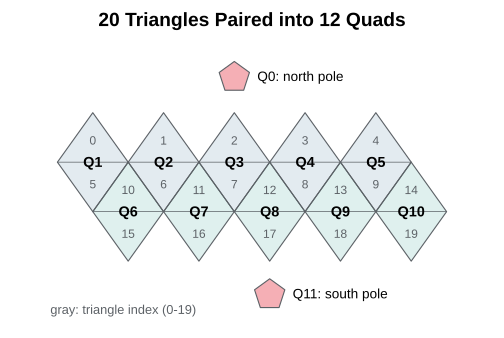
Quad IJ: The Integer Lattice
After Snyder projection maps a point onto a triangular face, the continuous coordinates are quantized to integer indices on the hexagonal lattice. At resolution with aperture , the lattice dimension along each axis is:
The pair uniquely identifies a cell within a quad. Combined with the quad number (0–11), this gives a globally unique cell address.
Hierarchical Index Types
hexify supports three hierarchical index encodings. Each converts the triple into a compact string or integer that encodes the cell’s position in the subdivision hierarchy.
Z7 Index (Aperture 7)
The Z7 index represents each cell as a hierarchical path through the aperture-7 subdivision tree (Kmoch et al., 2025). The format is:
where BB is the leading field and each digit selects one of 7 children at level . The digit meanings correspond to positions in the IVec3D cube coordinate system:
| Digit | Direction | Meaning |
|---|---|---|
| 0 | CENTER | Center child (same position as parent) |
| 1 | K_AXES | K-axis direction |
| 2 | J_AXES | J-axis direction |
| 3 | JK_AXES | JK-axis direction |
| 4 | I_AXES | I-axis direction |
| 5 | IK_AXES | IK-axis direction |
| 6 | IJ_AXES | IJ-axis direction |
The leading field is always two characters, so the resolution is
nchar(index) - 2. Dropping the final digit gives the
parent; appending digits 0–6 enumerates the seven positions in the next
refinement level.
On the icosahedron this is IGEO7’s Z7 index (Kmoch et al., 2025), and
hexify writes the same string as DGGRID, its reference implementation,
for every cell: paper/bench/bench_dggrid_z7.R compares all
cells at resolutions 0–7. Every valid index decodes to its cell and
re-encodes to itself.
The twelve resolution-0 cells are pentagons centred on the icosahedron’s vertices, and BB names the one a cell descends from. hexify computes cells on a quad, but a quad is a rhombus while the aperture-7 parents are hexagons, so the quad boundary cuts through the parents of the cells along it. Walking such a cell up the hierarchy arrives at a neighbour of the quad’s vertex rather than at the vertex itself, and BB is then the vertex at the quad corner that neighbour points to, not the cell’s quad. Under the two polar base cells the digits are also turned into the pole’s frame. A pentagon lacks one of the six directions, so the subsequence whose first nonzero digit is that direction is deleted (Sahr, 2005, pp. 83–84): digit 2 under base cells 0–5 and digit 5 under 6–11. A pentagon therefore has six children, and a string in the deleted subsequence names no cell.
At odd resolutions the cells are turned against the quad’s axes (Class III). Each is addressed as Sahr (2005, p. 80) addresses Class II cells, by the Class I cell one resolution finer centred on it; that cell’s own digit is 0 and is not written. Octahedral grids have square vertex cells, for which IGEO7 defines no index; there the leading field is , where is the digit of the neighbour of the quad’s vertex that the walk arrives at.
# Z7 index encoding for aperture 7
g7 <- hex_grid(resolution = 4, aperture = 7)
cell <- lonlat_to_cell(16.37, 48.21, g7)
idx <- cell_to_index(cell, g7)
cat(sprintf("Cell %s -> Z7 index: %s\n", as.character(cell), idx))
#> Cell 5194 -> Z7 index: 000324
cat(sprintf(" Leading field: %s (quad %d), Digits: %s\n",
substr(idx, 1, 2), as.integer(substr(idx, 1, 2)) %% 12L,
substr(idx, 3, nchar(idx))))
#> Leading field: 00 (quad 0), Digits: 0324
# Hierarchical property: parent is obtained by dropping the last digit
parent_idx <- substr(idx, 1, nchar(idx) - 1)
parent_info <- hexify_index_to_cell(parent_idx, 7, "z7")
cat(sprintf(" Parent index: %s (face %d, i=%d, j=%d)\n",
parent_idx, parent_info$face,
as.integer(parent_info$i), as.integer(parent_info$j)))
#> Parent index: 00032 (face 3, i=9, j=19)
# A valid Z7 index decodes and re-encodes without changing
decoded <- hexify_index_to_cell(idx, 7, "z7")
stopifnot(identical(
hexify_cell_to_index(decoded$face, decoded$i, decoded$j,
decoded$resolution, 7, "z7"),
idx
))Z7 as a 64-bit integer
IGEO7 also writes the Z7 index as one 64-bit integer (Kmoch et al.,
2025): the base cell in the top four bits, then three bits per digit
from resolution 1 down to resolution 20, with the digit 7 at every level
below the cell’s own. The string and the integer hold the same fields,
so "033000" packs to 0x3600ffffffffffff, and
the packed form stops at resolution 20, IGEO7’s finest. The monotonic ID
reads the string as a number in base 7,
so "033000" is
(Kmoch et al., 2026). Within a resolution it sorts as the strings do,
and the numbers of the pentagons’ deleted subsequences go unused.
cell_to_index() writes the packed index as
form = "int" (an integer64) or "hex" (16
hexadecimal digits, DGGRID’s INT64 output) and the monotonic ID as
"monotonic"; index_to_cell() reads all of them
back. integer64 is a signed type: the packed indices of base cells 08–11
have the top bit set and appear as negative numbers, and the one index
whose bits are
,
the resolution-20 pentagon of base cell 08, is the bit pattern bit64
uses for NA. The hexadecimal form carries every index
exactly.
g7 <- hex_grid(resolution = 4, aperture = 7)
cell <- index_to_cell("033000", g7)
cell_to_index(cell, g7, form = "hex")
#> [1] "3600ffffffffffff"
cell_to_index(cell, g7, form = "int")
#> integer64
#> [1] 3891391553024819199
cell_to_index(cell, g7, form = "monotonic")
#> integer64
#> [1] 8232OGC zone identifiers
OGC’s ISEA3H, ISEA7H, IVEA3H and IVEA7H name a zone by a root
rhombus, two faces of the icosahedron (hexify’s diamond quads, in
DGGAL’s order, A and B for the poles), a sub-rhombus counted row by row
within it, and a letter for the zone at that sub-rhombus, for example
"E6-317-A"; the same fields packed into 64 bits are the
uint64ZIRS. cell_to_index() writes them as
form = "textZIRS" and "uint64ZIRS", and
index_to_cell() reads them back; they equal DGGAL’s for
every zone up to ISEA3H level 10 and ISEA7H level 5
(paper/bench/bench_dggal_zirs.R).
cell <- index_to_cell("E6-317-A", ogc, form = "textZIRS")
cell_to_lonlat(cell, ogc)
#> lon_deg lat_deg
#> 1 34.78017 45.42938
cell_to_index(cell, ogc, form = "uint64ZIRS")
#> integer64
#> [1] 630503947831872604Neighbours by digit arithmetic
A step in direction from a cell changes its last digit and may carry a direction into the level above: , where is a digit’s unit vector and the aperture-7 scaling of level , whose rotation alternates between levels. Two tables, one per rotation sense, give and : the addition of generalized balanced ternary (Gibson and Lucas, 1982; Sahr, 2019), which hexify builds from the same scaling operations its index walk uses. A carry out of resolution 1 leaves the base cell for a neighbouring pentagon, and a table names that pentagon and the number of 60° turns that bring the digits into its frame, the part H3’s base-cell neighbour tables play for H3. Inside a base cell, a step into the deleted subsequence crosses the pentagon’s seam, and the cell there is the one a 60° turn away.
On aperture-7 grids of the icosahedron, get_neighbors()
takes a cell’s six neighbours from the quad lattice when all six lie in
its quad and from this arithmetic when one does not. The arithmetic is
exact and needs no projection; on cells along quad edges it is two and a
half to eight times faster than sending the step through longitude and
latitude (paper/bench/bench_z7_neighbors.R).
The Z3 and Z-order digits of apertures 3 and 4 are the base-3 and base-2 digits of the quad coordinates , recoded (Z3) or interleaved (Z-order), rather than the children of a central-place hierarchy. A neighbour step written in those digits is the step in carried digit by digit: the same result the quad lattice reaches in one integer addition, at cost, with the same quad-edge crossing. Digit arithmetic gives those grids nothing, so their neighbours stay on the quad lattice.
Z3 Index (Aperture 3)
The Z3 index encodes the aperture-3 subdivision hierarchy using digit pairs (Sahr, 2008). Because aperture 3 alternates between Class I and Class II orientation at each level, the encoding uses two digits per resolution-level pair:
Each digit pair is mapped through a lookup table to a Z3 code pair. For example, the offset maps to digits “01”, while maps to “22”. This mapping preserves the space-filling curve property, ensuring hierarchical locality.
# Z3 index encoding for aperture 3
g3 <- hex_grid(resolution = 8, aperture = 3)
cell <- lonlat_to_cell(16.37, 48.21, g3)
idx <- cell_to_index(cell, g3)
cat(sprintf("Cell %s -> Z3 index: %s\n", as.character(cell), idx))
#> Cell 14092 -> Z3 index: 0321202211
cat(sprintf(" Base cell: %s, Digits: %s (%d digit pairs)\n",
substr(idx, 1, 2), substr(idx, 3, nchar(idx)),
(nchar(idx) - 2) / 2))
#> Base cell: 03, Digits: 21202211 (4 digit pairs)Z-Order Index (Morton Curve)
The Z-order (Morton) index uses bit-interleaving of the coordinates, producing a Morton space-filling curve (Morton, 1966). The encoding depends on the aperture:
Aperture 4: Binary interleaving. Each digit pair in base 2 produces one output digit: , yielding digits in .
Aperture 3: Base-3 interleaving. The coordinates are expressed in base 3, and digits alternate:
Aperture 7: Base-7 interleaving with 2 digits per level.
# Z-order index for aperture 4
g4 <- hex_grid(resolution = 8, aperture = 4)
cell <- lonlat_to_cell(16.37, 48.21, g4)
idx <- cell_to_index(cell, g4)
cat(sprintf("Aperture 4: Cell %s -> Z-order index: %s\n", as.character(cell), idx))
#> Aperture 4: Cell 140534 -> Z-order index: 0311310300Index Type Comparison
| Property | Z7 | Z3 | Z-order |
|---|---|---|---|
| Apertures | 7 only | 3 only | 3, 4, 7 |
| Digits per level | 1 (range 0–6) | 2 (pairs) | 1 (ap3/4) or 2 (ap7) |
| Encoding | Hierarchical path | Mapping table | Bit interleaving |
| Locality | Excellent | Excellent | Good |
| Parent operation | Drop last digit | Drop last pair | Drop last digit(s) |
| Index length (res ) | or |
All three hexify encodings are bijective: each cell maps to exactly one index string, and each valid string to one cell. The strings hold every resolution; on aperture-7 grids of the icosahedron the Z7 index is also available as IGEO7’s 64-bit integer up to resolution 20 (see above).
SEQNUM: The Flat Cell ID
The SEQNUM provides a unique integer for each cell, independent of the hierarchical index. The total cell count at resolution with aperture is:
The “+2” accounts for the two polar pentagon cells. SEQNUMs are assigned by traversing quads in order (0–11) and cells within each quad in row-major order. This numbering maintains compatibility with dggridR.
H3 Comparison
hexify supports Uber’s H3 system as a first-class alternative to the ISEA backend. H3 uses a fundamentally different design with important trade-offs.
Architecture
| Property | ISEA (hexify native) | H3 (Uber) |
|---|---|---|
| Projection | Snyder ISEA (equal-area) | Face-centered gnomonic |
| Polyhedron | Icosahedron (20 faces) | Icosahedron (20 faces) |
| Aperture | 3, 4 and 7 in any sequence | 7 (fixed) |
| Cell area | Exactly equal | Varies by location |
| Resolutions | 0–30 | 0–15 |
| Cell IDs | Integer SEQNUM | 64-bit hex string |
| Pentagon handling | 12 per resolution | 12 per resolution |
Both systems tile the sphere with hexagons on an icosahedral framework, but the projection and subdivision choices lead to different properties.
The Area Variation Trade-Off
The most significant difference is area uniformity. ISEA uses the Snyder equal-area projection, guaranteeing that all hexagonal cells at a given resolution have identical area (pentagons are 5/6 of hex area). H3 uses a gnomonic (central) projection per face, which is not equal-area. This causes cell areas to vary by latitude:
# Compare ISEA (constant area) vs H3 (variable area) at similar resolutions
lats <- seq(-85, 85, by = 5)
lons <- rep(10, length(lats))
# ISEA: aperture 7, resolution 6 (~130 km² cells)
g_isea <- hex_grid(resolution = 6, aperture = 7)
isea_cells <- lonlat_to_cell(lons, lats, g_isea)
isea_areas <- cell_area(isea_cells, g_isea)
# H3: resolution 4 (~1,770 km² cells — different scale, but shows the pattern)
g_h3 <- hex_grid(resolution = 4, type = "h3")
#> H3 cells are not exactly equal-area; hexagon area varies ~2x within a resolution.
#> This message is displayed once per session.
h3_cells <- lonlat_to_cell(lons, lats, g_h3)
h3_areas <- cell_area(h3_cells, g_h3)
# Normalize to show relative variation
isea_rel <- isea_areas / mean(isea_areas)
h3_rel <- h3_areas / mean(h3_areas)
oldpar <- par(mar = c(4, 4, 2, 1), bg = "white")
plot(lats, h3_rel, type = "l", col = "#E63946", lwd = 2.5,
xlab = "Latitude (degrees)", ylab = "Relative cell area",
main = "Cell Area Variation by Latitude",
ylim = range(c(isea_rel, h3_rel)))
lines(lats, isea_rel, col = "#457B9D", lwd = 2.5)
abline(h = 1, lty = 2, col = GREY)
legend("bottomleft", legend = c("H3 (gnomonic)", "ISEA (equal-area)"),
col = c("#E63946", "#457B9D"), lwd = 2.5, bty = "n")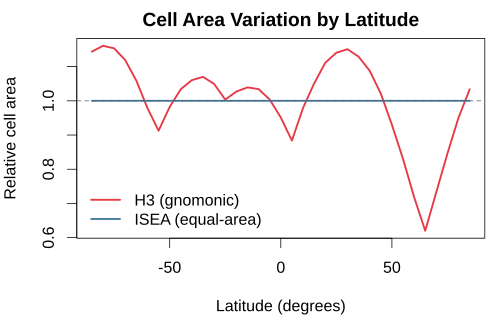
par(oldpar)For ecological and statistical applications where equal-area cells are important (species density estimation, spatial sampling), ISEA is the correct choice. For applications where hierarchical indexing speed matters more than area equality (ride-sharing, logistics), H3 may be preferable.
Resolution Mapping
Because ISEA supports multiple apertures, there is no one-to-one
resolution mapping to H3. The h3_crosswalk() function finds
the closest H3 resolution for a given ISEA grid:
# H3 resolution table: compare H3 and ISEA aperture-7 cell areas
cat("H3 Res Avg Area (km²) ISEA Ap7 Equivalent\n")
#> H3 Res Avg Area (km²) ISEA Ap7 Equivalent
cat("------ -------------- -------------------\n")
#> ------ -------------- -------------------
for (h3_res in 0:8) {
g_h3 <- hex_grid(resolution = h3_res, type = "h3")
h3_area <- g_h3@area_km2
# Find closest ISEA ap7 resolution by brute force
best_res <- 0
best_diff <- Inf
for (r in 0:15) {
g_test <- hex_grid(resolution = r, aperture = 7)
d <- abs(log(g_test@area_km2) - log(h3_area))
if (d < best_diff) { best_diff <- d; best_res <- r }
}
g_isea <- hex_grid(resolution = best_res, aperture = 7)
cat(sprintf(" %2d %14.1f res %d (%.1f km²)\n",
h3_res, h3_area, best_res, g_isea@area_km2))
}
#> 0 4357449.4 res 1 (7084244.7 km²)
#> 1 609788.4 res 2 (1036718.7 km²)
#> 2 86801.8 res 3 (148620.5 km²)
#> 3 12393.4 res 4 (21242.1 km²)
#> 4 1770.3 res 5 (3034.8 km²)
#> 5 252.9 res 6 (433.5 km²)
#> 6 36.1 res 7 (61.9 km²)
#> 7 5.2 res 8 (8.8 km²)
#> 8 0.7 res 9 (1.3 km²)When to Use Which
| Use case | Recommended | Reason |
|---|---|---|
| Species distribution modeling | ISEA | Equal area eliminates sampling bias |
| Spatial statistics (Moran’s I, variograms) | ISEA | Equal area ensures unbiased estimates |
| Ride-sharing / logistics | H3 | Fast hierarchical lookups |
| Visualization only | Either | Area variation invisible at map scale |
| Cross-system interoperability | Both via h3_crosswalk()
|
Bidirectional mapping |
Round-Trip Accuracy
original_lon <- 16.37
original_lat <- 48.21
cat(sprintf("Original: (%.4f, %.4f)\n\n", original_lon, original_lat))
#> Original: (16.3700, 48.2100)
for (ap in c(3, 4, 7)) {
res <- if (ap == 7) 6 else 10
grid <- hex_grid(resolution = res, aperture = ap)
cell_id <- lonlat_to_cell(original_lon, original_lat, grid)
recovered <- cell_to_lonlat(cell_id, grid)
error_km <- sqrt((recovered$lon - original_lon)^2 +
(recovered$lat - original_lat)^2) * 111
cat(sprintf("Aperture %d (res %2d): cell %s -> (%.4f, %.4f), ~%.1f km from center\n",
ap, res, as.character(cell_id),
recovered$lon, recovered$lat, error_km))
}
#> Aperture 3 (res 10): cell 126594 -> (16.4204, 48.2877), ~10.3 km from center
#> Aperture 4 (res 10): cell 2245587 -> (16.4177, 48.2119), ~5.3 km from center
#> Aperture 7 (res 6): cell 252091 -> (16.3388, 48.2019), ~3.6 km from centerSummary of ISEA Properties
| Property | Description |
|---|---|
| Equal area | All hexagonal cells identical; pentagons = 5/6 hex area |
| Bounded distortion | Max angular distortion ~17.3° at face edges |
| Uniform topology | Hexagons have 6 neighbors; pentagons have 5 |
| 12 pentagons | Topological necessity from Euler’s formula |
References
Brodsky, I. (2018). H3: Uber’s Hexagonal Hierarchical Spatial Index. Uber Engineering Blog.
H3 documentation (2024). H3: A Hexagonal Hierarchical Geospatial Indexing System. https://h3geo.org/
Bradley, A.D. (1946). Equal-area projection on the icosahedron. Geographical Review, 36(1), 101-104.
Carr, D.B., Kahn, R., Sahr, K., & Olsen, A.R. (1997). ISEA discrete global grids. Statistical Computing & Graphics Newsletter, 8(2/3), 31-39.
Coxeter, H.S.M. (1973). Regular Polytopes (3rd ed.). Dover Publications.
DGGRID Manual (2023). DGGRID Version 7.8 Documentation. https://github.com/sahrk/DGGRID
Gibson, L., & Lucas, D. (1982). Vectorization of raster images using hierarchical methods. Computer Graphics and Image Processing, 20(1), 82-89. https://doi.org/10.1016/0146-664x(82)90075-2
Kmoch, A., Renoud, W., Chan, W.T., Jimenez Shaw, J., Chrapkiewicz, K., & Uuemaa, E. (2026). Efficient Neighbourhood Computation and Cloud-Native Storage for the IGEO7 DGGS Using the Z7 GBT Indexing. Talk, FOSS4G Europe 2026, Timisoara, 29 June 2026. https://talks.osgeo.org/foss4g-europe-2026/talk/HSFXR3/
Kmoch, A., Sahr, K., Chan, W.T., & Uuemaa, E. (2025). IGEO7: A new hierarchically indexed hexagonal equal-area discrete global grid system. AGILE: GIScience Series, 6, 32. https://doi.org/10.5194/agile-giss-6-32-2025
Morton, G.M. (1966). A Computer Oriented Geodetic Data Base and a New Technique in File Sequencing. IBM Technical Report.
Recht, B.R.S. (2021). Snyder’s equal-area projection. The BRSR Blog. https://brsr.github.io/2021/08/31/snyder-equal-area.html
Sahr, K. (2005). Location coding on icosahedral aperture 3 hexagon discrete global grids. PhD thesis, University of Oregon. https://www.cs.uoregon.edu/Reports/PHD-200508-Sahr.pdf
Sahr, K. (2008). Location coding on icosahedral aperture 3 hexagon discrete global grids. Computers, Environment and Urban Systems, 32(3), 174-187.
Sahr, K. (2019). Central Place Indexing: Hierarchical Linear Indexing Systems for Mixed-Aperture Hexagonal Discrete Global Grid Systems. Cartographica, 54(1), 16-29. https://doi.org/10.3138/cart.54.1.2018-0022
Sahr, K., White, D., & Kimerling, A.J. (2003). Geodesic Discrete Global Grid Systems. Cartography and Geographic Information Science, 30(2), 121-134.
Snyder, J.P. (1987). Map Projections: A Working Manual. U.S. Geological Survey Professional Paper 1395.
Snyder, J.P. (1992). An equal-area map projection for polyhedral globes. Cartographica, 29(1), 10-21.
van Leeuwen, D., & Strebe, D. (2006). A “slice-and-dice” approach to area equivalence in polyhedral map projections. Cartography and Geographic Information Science, 33(4), 269-286.
White, D., Kimerling, A.J., & Overton, W.S. (1992). Cartographic and geometric components of a global sampling design for environmental monitoring. Cartography and Geographic Information Systems, 19(1), 5-22.